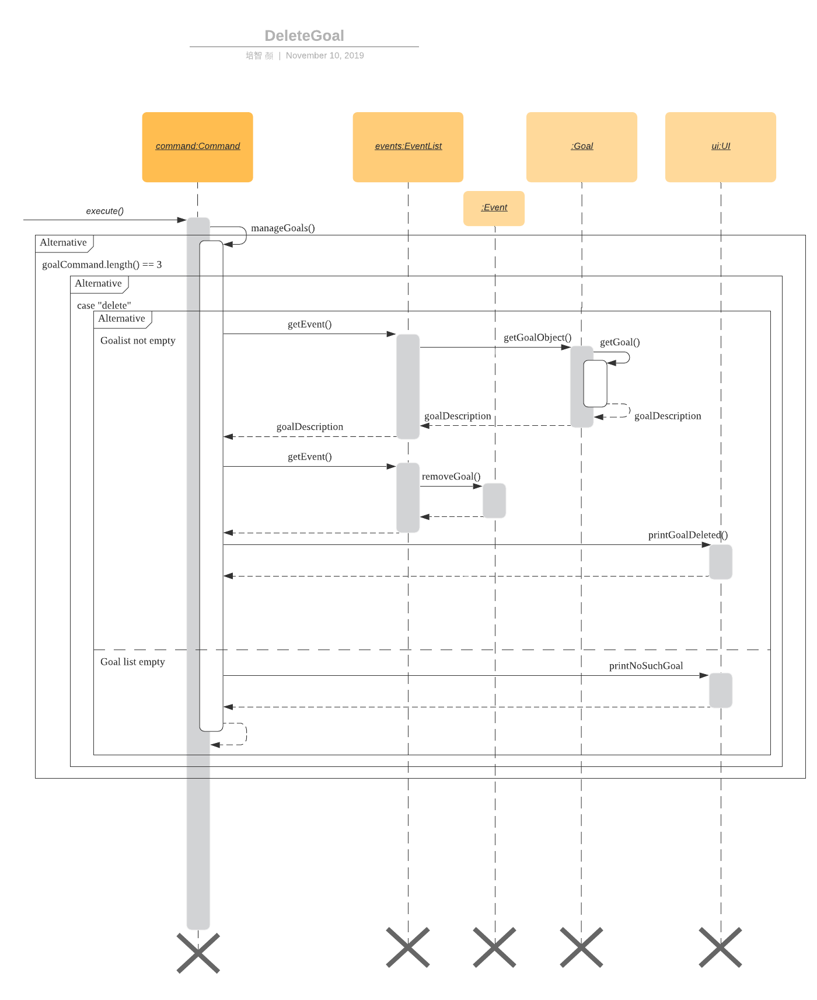

By: Team CS2113T-F11-4 Since: Aug 2019 Licence: MIT
- 1. Setting up
- 2. Design
- 3. Implementation
- 4. Documentation
- 5. Testing
- 6. Dev Ops
- Appendix A: Product Scope
- Appendix B: User Stories
- Appendix C: Use cases
- C.1. Entering a practice schedule into the system
- C.2. Entering the details of a recital into the system
- C.3. Making notes
- C.4. Viewing upcoming events
- C.5. Entering the examination details
- C.6. Rate and comment on the efficiency of practice sessions
- C.7. Edit descriptions of any existing event
- C.8. Viewing all events in the coming 7 days.
- Appendix D: Non-functional requirements
- Appendix E: Instructions for Manual Testing
- E.1. Launch and Shutdown
- E.2. Obtain the list of items currently in stored in the system
- E.3. Help list for input format
- E.4. Add an Event
- E.5. Add recurring events
- E.6. Set a Task as done
- E.7. Find tasks that contains a certain keyword or key phrase
- E.8. Get reminder
- E.9. View all tasks in a certain day
- E.10. Edit description of an event
- E.11. Reschedule an event
- E.12. Check the next 3 free days
- E.13. View the calendar table of the next 7 days.
- E.14. Goal management
- E.15. Past event management
- E.16. Contact management
- E.17. Budgeting
1. Setting up
1.1. Prerequisites
-
JDK 11 or above is required
-
IntelliJ IDE is recommended
IntelliJ by default has Gradle plugin installed.
Do not disable them. If you have disabled them, go toFile>Settings>Pluginsto re-enable them.
1.2. Setting up the project environment on your local machine
-
Fork and clone the forked remote on your local machine
-
Launch IntelliJ (If you’re not on the IntelliJ Welcome screen please close your existing project by going to
File>Close Project) -
Set up the correct JDK version for Gradle
-
Click
Configure>Structure for New Projects -
Under
Project SettingsClick onProject -
Under
Project SDKClickNew…and point it to JDK 11 path -
Click
OKto save the configuration
-
-
Click
Import Project -
Locate the
build.gradlefile and select it. ClickOpen -
Open the IntelliJ console/terminal and run the gradle command
gradlew processResourceon Windows or./gradlew processResourceon Mac/Linux (If you are encountered a permission error:./gradlew: Permission deniedadd the executable permission to the the shell script by runningchmod 744 gradlewin your terminal) It should finish with theBUILD SUCCESSFULmessage. This will generate the resources required by the application and tests.
1.3. Verifying the setup
-
Run MisterMusik to verify and try a few commands.
-
Run the JUNIT Test/gradlew test command to ensure that all the test case passes.
2. Design
2.1. Overall Architecture
This image shows the overall architecture of our program

There are three main components in the overall architecture of the application.
2.2. Main component
Main component has one class called Duke. It is responsible for the following:
-
On startup: Initializes all components and sets up the correct file path so that the program correctly interacts with the external txt file.
-
During runtime: Acts as an intermediary between the
Parserclass and theCommandso that user input can be parsed and then executed accordingly. -
On shutdown: Interacts with the UI class to communicate the shutdown message to the user.
2.3. UI component
UI component contains all classes necessary to interact successfully with the user. The Parser parses input commands
from the user whilst the UI class handles all necessary dissemination of information to the user through System.out.
2.4. Logic component
This component contains all necessary classes that :
-
Are in charge of handling how all necessary information is internally stored within the program’s runtime.
-
Alter the internally stored information whenever necessary (i.e when changes are made by the user).
-
Extract information requested by the user from the stored information and pass them back to the user through the UI component
-
This is achieved through the two classes
EventListandCommand.EventListdecides how information is stored internally as well as how internal stored information is altered and/or extracted.Commandcommands theEventListclass on what needs to be done at any point in time.
2.5. Storage component
This component contains all necessary classes that read and write external txt files. This is where all information is
stored while the program is not running.
In particular, the Storage class directly reads from and writes to and external txt file in the data directory.
2.6. Commons
This component represent all other low-level classes required for the program to function.
This includes classes like the Event class which is the abstract parent class for all the types of classes that
represent the different types of events(ToDo, Concert, Exam, etc.) a user can input as an entry in the program.
This image shows the sequence diagram when a user input "delete 1" is entered.
3. Implementation
This section describes some noteworthy details on how certain features are implemented.
3.1. Calendar Table
The calendar table is generated from the EventList. It prints on the screen a table of calendar of 7 days
starting from a specified day, including the events within this time period.
3.1.1. How it is implemented
Given below is how a calendar table is generated and printed.
Step 1. User enters calendar to start the initialization process of a calendar table with today as the starting day.
Step 2. The program checks the date of the given start day to generate a list of 7 days, starting from given day. It also gets the day of the 7 days (e.g. Monday, Tuesday, etc). This sets the dates info of the table.
E.g. Example of a day and dates list
Step 3. The program find all events in the EventList that is within the 7 days,
and store them correspondingly into 7 queues, representing the 7 days. This is for further printing.
E.g. Example of an event list of 7 days
Step 4. The program now have all the information of these 7 days and is then able to print the calendar table.
-
It initiates an empty string to store all info of the calendar and for later printing.
-
It puts the header of he table into the string.
-
It puts the days of week and dates info into the string.
-
To add in events, each event takes 3 rows (time info, description, and dashes) to print. For each 3 rows, there can be at most 7 events. The events are added per 3 rows. For each 3 rows, the program creates an array of 3 * 7 to store the details. Whenever there exists an event at the position of a day, details of the event will be added to the corresponding 3 rows (1 column) of the array. The array is then added by rows into the string.
E.g. Example of a row of events stored for printing
3.1.2. Commands for CalendarView
-
calendarThis prints the calendar table of this 7 days. -
calendar nextThis prints the calendar table of the next 7 days. -
calendar lastThis prints the calendar table of the last 7 days. -
calendar onAllow the calendar to be printed after every command execution. -
calendar offNot allowing the calendar to be printed after every command execution.
3.2. Check Free Days
CheckFreeDays is a command that allows the program to search for the next 3 days without any
events (except ToDos).
-
When the user enters
check, starting from the current day, the program checks all the events whether any is in this day. -
If not, this day will be added into a list.
-
Above process will continue until the list has 3 days, which will then be printed.
The following logic diagram shows how check free days is implemented.
3.3. Checklists
Checklist of each event can be used to remind users of certain items (e.g. bring glasses to concert).
This is implemented by storing an array list of strings in Event objects.
Checklist implementation contains 4 operations:
3.3.1. add checklist item
checklist add <event index>/<checklist item>
This adds an item into a specific event’s checklist.
3.3.2. view checklist
checklist view <event index>
This prints on the screen the checklist of an event.
3.3.3. edit checklist item
checklist edit <event index> <item index>/<new item>
This edits a specific item in the checklist of an event.
3.3.4. delete checklist item
checklist delete <event index> <item index>
This deletes an item from the checklist of an event.
3.4. Clash handling
3.4.1. Activity diagram
The following activity diagram represents a typical clash handling scenario
3.4.2. How is it implemented
The program is able to detect clashes when creating new events. When the user enters the command
to add a new Event entry to the list, the method EventList.addEvent is called from the Command
class object upon execution.
The addEvent method will then call the EventList.clashEvent method to check the
existing entries for any clash in schedule. This is done by first searching the list for an event
that has a matching date with the new event.
If no such event is found, the method returns a null value, indicating that there is no schedule clash.
If an event is found with a matching date, the clashEvent then calls the EventList.timeClash method to check whether
the two events have overlapping time periods.
If there is any overlap, the timeClash method will return true as a boolean, indicating there is a schedule clash.
The clashEvent method then throws an exception ClashException, indicating that there was indeed a schedule
clash between the desired new entry and some pre-existing Event.
The details of the clashing Event are passed back to Command object via the exception so that it can be used to inform the
user about the clashing event. The user is then required to fix the conflict before continuing,
either by rescheduling or deleting the pre-existing event, or by choosing a different date/time for
the new Event entry.
3.4.3. Why it is implemented this way
The process of checking for a clash was implemented as small, simple components so as to ensure scalability, reliability, and to reduce dependencies.
The choice to use exception handling to deal with an event clash was done so that it could be easily re-purposed for any incremental extension that required checking for a schedule clash. Catching of the ClashException should be performed in the Command class, and the info regarding the schedule clash can be easily obtained for further action.
By having the clashEvent method return a null value or a reference to a clashing event in the schedule, the
clashEvent method can now be used for any further increments to the code requiring addition of events.
It was thus easy to implement this clash detection as a part of adding recurrent events (to check for clashes when recurrent events were automatically entered) as well as the rescheduling function (to check for clashes when the user attempts to reschedule an existing event, so that he/she does not inadvertently create a new schedule conflict).
This implementation is reliable because it can always be expected to work whenever it is necessary to add new events to the list, provided the unit tests for this functionality under MainTest work. It is also not dependent on any other functionality, allowing for developers to change the implementation of other parts of the application without affecting the clash handling
3.4.4. Expected behaviour of functionality
When a user attempts to add an event(recurring or otherwise) and the program detects a clash with an existing event
in the pre-existing list, the following output should be printed:
"That event clashes with another in the schedule! Please resolve the conflict and try again!"
This is followed by the following line indicating the details of the detected clash:
"Clashes with: [E][X] YST Final project review START: Tue, 03 Dec 2019, 15:00 END: Tue, 03 Dec 2019, 18:00
3.4.5. Design considerations
While designing the clash handling system, i had to decide how best to:
1. Detect a clash.
2. Pass relevant information back to the caller class for further usage.
| Aspect | Alternative 1 | Alternative 2 |
|---|---|---|
How clashes were detected |
Simple if-else statements instead of using exception handling. Pros: Much easier to implement and simpler to work with. Cons: Less scalability as it would be harder to integrate the functionality into new features. |
Have a specific command/method so that the current list can be checked for a clash at will. Pros: Much more flexible, and even more scalable than the current implementation as it would be possible to do anything regarding changes to the list, and then later check for clashes. Cons: Much more room for error, since clashes are allowed to exist within the list normally, and are not automatically detected. This could lead to major bugs related to events that overlap eac other. |
How relevant information is passed up the chain |
Simply returning the relevant event that caused the clash as a part of the method call. Pros: Extremely simple to understand. Easy to implement. No need to deal with exception handling, just
code for specific case in the event of a clash. Cons: Less scalable. If a developer wants to add more functionality to the clash handling(e.g return more data), he/she would need to return a new object containing the relevant data. |
3.5. Add recurring events
3.5.1. Activity diagram
The following is the activity diagram for adding recurring events.
3.5.2. How it is implemented
The program is able to detect recurring events and their periods when creating new events.
When the user enters the command to add a new Lesson or Practice event with a period (in days) followed,
createNewEvent method will call entryForEvent to get the period.
If the new event is not a recurring event, the period value will be assigned to NON-PERIOD and then call the
addEvent method in the EventList class.
After getting the period, the createNewEvent method will call the addRecurringEvent method in the EventList class
to create and store new events in the eventList.
The calculation of dates are done by Java Calendar, Calendar.add function is called to calculate the startDate
and endDate of new events in Java Date type. The number of recurring events is depended on the period, since the
maximum date between the first recurring event and the last one is up to ONE_SEMESTER_DAYS which is assigned to
16 weeks (112 days) now.
When creating the startEventDate and endEventDate of the new event,
calendar.getTime is called and the identifier in EventDate will be assigned to DATE_TO_STRING, so that the
startDateAndTime and endDateAndTime are in String type, which fits the requirement of the Event class.
All the events created in the addRecurringEvent method will be checked whether having clash with the events in the
current eventList and then added in a temporary event list one by one. If no clash happens, the tempEventList will
be added to the current eventList.
Given below is an example usage scenario compared to adding non-recurring event.
Recurring event: lesson|practice <event description> /dd-MM-yyyy HHmm HHmm /<period(in days)>
Non-recurring event: <event type> <event description> /dd-MM-yyyy HHmm HHmm
3.5.3. Why it is implemented this way
-
Whether the input command has a period is considered at the first, so that the dependency between adding recurrent events and adding normal events could be reduced.
-
The
add(int field, int amount)method ofCalendarclass is used to add or subtract from the given calendar field and a specific amount of time, based on the calendar’s rules.
public abstract void add(int field, int amount) -
Since the number of recurrent events with a short period could be large, it is more likely to have clashes with the current eventList. Hence, before added in the temporary event list, the new event need to be ensured that no clash happens.
-
To keep the format of creating new events, the format process of changing Java Date to String is done in the
EventDateclass instead of messing theEventclass to accept both Date and String types as input date and time.
3.5.4. Sequence diagram
The following sequence diagram shows how the adding recurring event operation works.
3.5.5. Design considerations
Aspect: How to avoid adding infinite events
-
Alternative 1 (current choice): Set a upper limit to ensure the interval between the first and last events added to list is not too long.
-
Pros: Easy to implement. Easy to add lesson and practice in one semester.
-
Cons: Not agility. May add too many extra events if users want short interval between the first and last recurring events.
-
-
Alternative 2: Let users to set the interval between the first and last recurring events.
-
Pros: Will be more agility and user friendly.
-
Cons: Hard to unify the command format.
-
3.6. Contacts list
3.6.1. How is it implemented
The contacts list stores a list of contacts contain <name>, <email address>, and <phone number> information added by
users. The list is stored in each individual event. When the user first creates the event, the event is created with an
empty contact list.
Users can add, edit, delete a specified contact item, and view the contacts list of a specified event.
Adding a contact
Given below is an example to adding a contact:
contact add <event number> /<name>, <email address>, <phone number>
-
When the command is entered, the manageContacts() method will be called.
-
The method will check whether the event ID is valid. Add a new Contact will be created with contact information in it.
-
The event corresponding to the ID entered along with its method addContact() will be called to add the contact into the contact list in the event.
-
The printContactAdded() method of the UI class will be called to reflect the change to the user.
Viewing the contact list
Given below is an example to view contact list of an event:
contact view <event number>
-
When the command is entered, the manageContacts() method will be called.
-
The method will check whether the event ID is valid, and whether the contact list of the event is empty.
-
If the contact list is empty, printNoContactInEvent() will be called to inform the user that contact list is empty. If the contact list is not empty, printEventContacts() will be called ang print all the contacts in the list under the event.
Editing a contact
Given below is an example to edit a contact in the contact list:
contact edit <event number> <contact number> name|email|phone /<new contact>
-
When the command is entered, the manageContacts() method will be called.
-
The method will check whether the event ID, the contact ID, and the edit type are valid.
-
The contact information will be changed.
-
The printContactEdited() method of the UI class will be called to reflect the change to the user.
Deleting a contact
Given below is an example to delete a contact in the contact list:
contact delete <event number> <contact number>
-
When the command is entered, the manageContacts() method will be called.
-
The method will check whether the event ID and the contact ID are valid.
-
The contact will be deleted from the list.
-
The printContactDeleted() method of the UI class will be called to reflect the change to the user.
3.6.2. Why is it implemented this way
-
For different events, users may have different people to contact with. So a empty contact list is created under each event. For some events, users may have more than one person to contact with. Hence, users are allowed add more contact items under one event.
-
We want to keep the information highly relative to contact, so users just need to add <name>, <email address>, and <phone number> for a contact item. Sometimes may not have the email or phone number of a person, so it also allows users to add one of <email address> and <phone number>.
-
The main propose of MisterMusik is schedule events, so the contact list is hidden on the basic list viewing. Users can use command
contact view <event number>to see the contact list of the specified event.
3.7. Viewing specific dates
3.7.1. How is it implemented
The implementation is a simple for loop that runs through the existing task list. If a matching date is detected, it will return the corresponding task and add it to a temporary list of found tasks. After running through the whole list, the temporary list will be printed out to display all the tasks of a specific date.
Step 1: When the command "view <date>" is given, the viewEvents() method will be called.
Step 2: A temporary ArrayList is created by the method to be populated.
Step 3: The date string from the input command is passed into the EventDate class to be formatted into the same format as that of each event and returned as a string.
Step 4: The returned string is compared with each task in the event list to check for any event with a matching date.
Step 5: When an event with a matching date is found, the event is added to the temporary list.
Step 6: After the entire list has been checked, the temporary list is passed into a UI instance
Step 7: The printFoundEvents() method will be called. The said method then prints out the temporary list, displaying the list of events taking place on a specific date.
In the situation when an empty temporary list is passed into the UI for it to print, an exception will occur and the printFoundEvents() method will catch the exception before printing out a string to inform the user that there are no tasks taking place on that specific date.
3.7.2. Activity Diagram
3.7.3. Why is it implemented this way
The matching events are being stored individually into a separate temporary list before being printed out. This is to allow an easier handling of individual tasks as separate instances in case the user wishes to edit a particular task from the temporary list.
3.7.4. Alternative implementations considered
Storing all the matching events as a single string, passing the string into the printFoundEvents() method to print out. This implementation is undesirable as it will be difficult to access individual matching events in the case the user wishes to edit them as mentioned above.
3.7.5. Sequence Diagram
3.8. Goals List
3.8.1. How is it implemented
The goals list is an array list type that stores a list of goals to be achieved by the user for each individual event, particularly for Lesson and Practice type events. When the user first creates the event, the event is created with an empty goal list. Only when the user types in "goal add <event ID>" then the goal list will be updated with the particular goal. The user can then manipulate the goal list by using "goal edit", "goal delete" or "goal view" commands.
Adding a goal
Step 1: When the command "goal add <event ID>/<goal description>" is entered, the goalsManagement() method will be called.
Step 2: The command description will be split up into separate strings. The string for event ID will be parsed into an integer type.
Step 3: The method will check the string for the goal command description. In this case it will be "add" and execute the code for this case.
Step 4: A new Goal class instance will be created with the goal description string. Its achieved status set as false.
Step 5: The event corresponding to the ID entered along with its method addGoal() will be called to add the goal instance into the goal list.
Step 6: The goalAdded() method of the UI class will be called to reflect the change to the user.
3.8.2. Editing a goal
Step 1: The user will enter the command "goal edit <event ID> <goal ID>/<new goal description>". The goalsManagement() method is called.
Step 2: The command description will be split up into separate strings. The strings for event ID and goal ID will be parsed into an integer type.
Step 3: The method will check the string for the goal command description. In this case it will be "edit" and execute the code for this case.
Step 4: A new Goal class instance will be created for the new goal description.
Step 5: The method editGoalList() of the event corresponding to the input ID will be called. The method will set the goal indicated as the new Goal instance.
Step 6: The goalUpdated() method of the UI class will be called to reflect the change to the user.
3.8.3. Deleting a goal
Step 1: When the user enters the command "goal delete <event ID> <goal ID>", the goalsManagement() method will be called.
Step 2: The command description will be split up into separate strings. The strings for event ID and goal ID will be parsed into an integer type.
Step 3: The method will check the string for the goal command description. In this case it will be "delete" and execute the code for this case.
Step 4: The corresponding event will have its removeGoal() method called which removes the indicated goal from the list.
Step 5: The goalDeleted() method of the UI class will be called to reflect the change to the user.
3.8.4. Setting the goal as achieved
Step 1: When the command "goal achieved <event ID> <goal ID>" is given, the goalsManagement() method will be called.
Step 2: The command description will be split up into separate strings. The strings for event ID and goal ID will be parsed into an integer type.
Step 3: The method will check the string for the goal command description. In this case it will be "achieved" and execute the code for this case.
Step 4: The method updateGoalAchieved() for the corresponding event will be called.
Step 5: The goals list within the event is called with the indicated goal.
Step 6: The indicated goal will then call its setAchieved() method that assigns the boolean isAchieved attribute of that particular goal to "true".
Step 7: The goalSetAsAchieved() method of the UI class will be called to reflect the change to the user.
3.8.5. Viewing the goal list
Step 1: The user will enter the command "goal view <event ID>". The goalsManagement() method will be called.
Step 2: Command description will be split and the string for event ID will be parsed into an integer type.
Step 3: The printEventGoals() method will be called to check the contents of the goal list for the indicated event.
Step 4: If the goals list is not empty, it will print out the contents of the list using a for loop. Otherwise it will print a message to the user to reflect that the goal list is empty.
3.8.6. Why is it implemented this way
The goal managing function is implemented as a separate list within an event in order to utilise the indexing of the list elements. This way, a particular goal for a particular event can be easily accessed and manipulated via the input of an integer.
3.8.7. Alternatives considered
An alternate method considered was to implement the goals list as a separate class of its own. Each goal within this list will then be mapped to their corresponding events. This implementation method would cause difficulties on the users' part in identifying the ID of a particular goal and would generally makes the goal list less organised.
3.8.8. Sequence Diagram
Below is a sequence diagram for the "goal delete" operation. 
3.9. Past event management
This functionality basically tracks which tasks in the list have already passed, and subsequently only displays future tasks when the user uses the "list" command to view the list. This function is linked with the goals management function as it also detects unachieved goals in events that are already over.
3.9.1. How is it implemented
The EventList class contains an integer attribute called currentDateIndex, which will be initialised to 0. The system will then compare the current date with the start dates of each of the events in the event list. Once an event that is in the future has been reached, the index of the event will be assigned to the currentDateIndex. After this has been done, the "list" command will only list out events starting from that particular index.
Step 1: The integer attribute currentDateIndex in the EventList class instance will be initialised to 0 and the Date class currentDate attribute will be initialised to the system date and time of that instance
Step 2: Whenever the user inputs the "list" command, the listOfEvents_String() method is called which will in turn call the findNextEventAndSetBoolean() method which takes in the Date class that has been initialised in step 1.
Step 3: In the findNextEventAndSetBoolean() method, the start dates of each event are compared to the current date using Date class’s compareTo() method using a for loop.
Step 4: The moment the loop reaches an event that has not happened yet i.e. its start date is later than the current date, the index of the event in the list will be assigned to the currentDateIndex and the loop terminates.
Step 5: Back in the listOfEvents_String() method, the list of events starting from the one with the same index integer as currentDateIndex will be returned to the UI class to be printed out.
3.9.2. Why is it implemented this way
This function is implemented this way to maximise the usefulness of the indexing nature of ArrayList. Even if an event has passed and the list no longer shows it, the indexes of all the events are kept constant. This is crucial as the commands for most of our functions require the user to indicate the index of an event they want to manipulate, and keeping them constant makes it very easy for the user to input commands without having to take note of the change in the event indexes after making any changes to the list.
3.9.3. Alternatives considered
We have considered the possibility of deleting the past events that are over. However, as mentioned above we require the indexing of the events to stay constant and by deleting the past events, the event indexes will change as well.
3.9.4. Integration with goal list management
Implementation
The management of goals list can be integrated with the ability to track past events. This is done through a boolean attribute gotPastUnachieved in the EventList class. If true, there are unachieved goals for past events and vice versa.
Step 1: User enters the "list" command. The listOfEvents_String() method is called which then calls the findNextEventAndSetBoolean() method.
Step 1: Within the findNextEventAndSetBoolean() method, the attribute currentDateIndex is checked to see if it is more than 0. If it is, that means there are past events.
Step 2: If there are past events, the method will enter a nest of two for loops. The outer loop runs through all the past events, while the inner loop iterates through the goal list for each individual past event.
Step 3: Each time an inner loop is iterated through, the getBooleanStatus() method for the particular event will be called. If returns true, gotPastUnachieved will be assigned as true and the method will break out of the loop.
Step 4: After the event list has been printed out, the method getPastEventsWithUnachievedGoals() is called. This method utilises two nested for loops to identify the unachieved goals among all the past events and passes both the past events along with all their unachieved goals to the UI class to be printed out below the event list.
3.9.5. Sequence Diagram
3.10. Reminders
3.10.1. How it is implemented
The reminder function filters out the tasks that are due or are happening before 2359 three days after the current date, and prints them out as a reminder for the users.
After the user enters 'reminder', the Command.execute method calls Command.remindEvents, which in turn calls the Ui.printReminders function. The Ui.printReminders function calls the EventList.getReminder method, which uses the EventList.filteredList method to filter out a list of events that are due or are happening before 2359 three days after the current date. The EventList.filteredList method filters out events from the stored list of events according to a certain input predicate.
The constructor of the Predicate class takes in two arguments: the reference and the comparator. The reference is the item that is used for the comparison reference (comp) input, and the comparator is the operator that is used for the comparison. The comparator should be either one of the three global integer variables: EQUAL, GREATER_THAN or SMALLER_THAN. The Predicate.check method takes in an input and checks if reference (comp) input is true by calling the appropriate method in the Predicate class depending on the type of the reference and input.
In the EventList.getReminder method, the reference of the input Predicate object is set to an eventDate object set to
2359 three days after the current date, and the comparator is GREATER_THAN. After that, the EventList.getReminder method
calls the EventList.filteredList method. In the EventList.filteredList method, the system iterates through the list of Events in
eventArrayList.The EventDate object stored in the the Event object is passed into the Predicate.check method. If the
EventDate object stored in the the Event object is a date before the reference date, the Predicate.check method returns true
and the Event object is added to the output. After all the elements in EventList.filteredList are parsed and the
EventList.filteredList method terminates, EventList.getReminder method returns a string containing the current date and time,
the date and time at 2359 three days after the current date, and the filtered list of events. This string is printed to
stdout in the Ui.printReminders function.
3.10.2. Sequence diagram
The following sequence diagram shows how the reminder functionality works.
3.10.3. Why it is implemented this way
The reminder function is split the various components into different methods for easier testing. In this case, Ui.printReminders
prints the output to the user interface, EventList.getReminder is responsible for compiling the output whereas EventList.filteredList
obtains the filtered list of events from eventArrayList.
This implementation also implements scalability as the Predicate class and the EventList.filteredList method can be reused for other functions.
4. Documentation
We use asciidoc for writing documentation.
| We chose asciidoc over Markdown because asciidoc, although a bit more complex than Markdown, provides more flexibility in formatting. |
5. Testing
The testing for our application is done through Junit tests (also viable to run these through gradle) and manual testing, covered in Appendix E: Instructions for manual testing
5.1. Junit testing
-
IntelliJ: Simply right click the src/test/java directory and select
Run 'Tests in 'seedu.duke…'or right click the individual test class you wish to run, and selectRun 'BudgetTest'for example when testing individual components. This can also be done through the Gradle sidebar (double click the corresponding test underrun configurations). -
Command prompt: Simply type the command
gradlew clean test
6. Dev Ops
For build automation, we chose to use gradle, allowing for a more convenient process when running tests and checking for coding standard violations. Here are some of the gradle tasks that are essential to the development of the application.
| For all the following commands, it is possible to run them through the IntelliJ IDE using the gradle task bar. The tasks on the task bar are identical in name to the command line tasks, so the following information is still relevant regarding their functions. |
6.1. How to run gradle commands
Use the command gradlew <taskname>
Different tasks can be run at the same time by using a format such as
gradlew <task1> <task2>…
|
For Mac users, you will need to add a ./ prefix before the command. For example,
./gradlew run
|
6.2. Building a jar file
The command shadowJar will build a jar file using the current source code and store it under
the build/libs directory.
6.3. Clean
The command gradlew clean will remove the buildDir folder, thus removing everything including leftover
files from previous builds which are no longer necessary.
| While running a task, Gradle checks if it is actually necessary to carry out the procedure by default. For example, Gradle will not rebuild the jar file if source code has not changed since the last time a jar file was packaged. |
In order to force gradle to execute the task, the clean command can be used. For instance,
gradlew clean shadowJar will force a new jar file to be built.
6.4. Running the application
6.4.1. Run as per normal:
The command gradlew run will build and run the application
6.4.2. Run as jar file:
The command gradlew runShadow will build the project as a jar file, and then run it.
6.5. Checkstyle
Using the command checkstyleMain will check for style violations in the main source code.
Using the command checkstyleTest will check for style violations in the test source code.
Appendix A: Product Scope
A.1. Target User Profile
MisterMusik is a scheduler program created for serious music students pursuing a professional music career as a western classical music performer.
The program is designed to automate and streamline most of the process in scheduling and organisation of materials, allowing the students to focus more on the important aspects of their education.
Appendix B: User Stories
-
As a busy music student with multiple classes, I want to be able to track my practice sessions so that I won’t miss any trainings.
-
As a music student with a heavy workload, I want to be able to track my upcoming recitals and their details so I can prioritize which pieces/what techniques to practice and focus on.
-
As a music student with a tendency to procrastinate in things I need to do, I want to be constantly reminded of my examination dates so i do not wait till the last minute to prepare for them.
-
As a student who wants to maximize my efficiency in practice sessions (performer), I want to be able to rate and comment on the efficiency of my practice sessions and be able to review them to make sure that I learn and improve faster.
-
As a student who wants to categorize what I learn in classes, I want to be able to take notes and organize them into different categories, so that I can easily review it anytime.
-
As a student who wishes to be aware of his upcoming events, I wish to be able to view my schedule within a selected number of weeks so that I can plan for it.
Appendix C: Use cases
C.1. Entering a practice schedule into the system
-
User enters a command to add a practice followed by a date, and the details of the intended practice.
-
System prompts user about whether or not he wishes to make this a recurring practice (e.g every Tuesday).
-
User responds to the prompt accordingly.
-
System adds practice session to a stored list and saves it to a file on the user’s hard drive.
C.2. Entering the details of a recital into the system
-
User choose to enter a recital.
-
System requires details of the recital.
-
User enters date, time, venue, the pieces to be performed, and a description if needed.
-
System adds recital to a stored list and saves it to a file on the user’s hard drive.
Extension 3.1: System detects there is a clash with a concert/practice session at step 3. 3.1.1. System generates warnings and ask user to delete the corresponding entry and forgo that event. 3.1.2. User responds to the warning, deleting or rescheduling one of the events in a clash if necessary. 3.1.3. System updates the stored list and saves it to the file on the user’s hard disk.
Extension 3.2: System detects a clash with another recital or an examination at step 3. 3.2.1. System generates warnings and ask user to reschedule and re-enter one of the events that clash. 3.2.2. User responds to the warning, rescheduling and re-entering one of the events in a clash. 3.2.3. System updates the stored list and saves it to the file on the user’s hard disk. Use case ends
C.3. Making notes
-
User chooses to enter a command to start a note-taking/viewing session
-
System shows the user a list of categories (directories) of notes that have been made previously and prompts the user to enter one or create a new file.
-
User makes a choice to enter a category directory or create a new one.
-
System shows the user a list of files containing notes, each file is named with the corresponding date, and a description of the file decided by the user. System also prompts the user if he wants to create a new file or enter an existing one.
-
User selects a file to enter or chooses to create a new file.
-
System opens the file for viewing and editing. The user can choose to make changes to the notes using commands: delete, add and move to delete, add or move notes around the file accordingly.
Extension 3.1: System detects there is no category file that user commands to edit on 3.1.1. System generates warnings and ask the user whether or not he wishes to add a new category and take notes in 3.1.2. User responds to the warning, and choose to add a new category 3.1.3. System adds and opens a new category file with the name given by user
C.4. Viewing upcoming events
-
User enters command
listfollowed by an integer N representing the number of weeks in advance he would like to view his schedule. -
System responds by showing the user a list of events in the next N weeks.
-
User may enter a command to remove specific tasks from the list, to have a cleaner viewing experience.
Extension 3.1: System can remove types of events from list at user’s command
3.1.1. User can enter commands remove examinations for example, to remove the examinations from the display.
3.1.2. System responds accordingly, removing the type of event from the list and altering the list of events displayed.
Extension: 3.2. System can allow the user to only view a specific type of event.
3.2.1. User can also enter commands show examinations for example, to only show examinations in the list of events.
3.2.2. System will respond accordingly, displaying only type of event that the user specified.
Extension: 3.3. System can allow the user to only view events on a specific date. 3.3.1. User can enter the command "view <dd-MM-yyyy>"" to view all events on that specific date. 3.3.2. System will display the events, and the user can edit the events accordingly.
C.5. Entering the examination details
-
User enters command
examination, together with a description of the examination, along with the date, time, venue and any other notes in a given format. -
The system adds the examination to the list of events.
Extension 1.1: System detects a clash with the examination date entered and another event. 1.1.1. System will prompt the user to reschedule the event of lower priority. (examinations and recitals are of highest priority, followed by concerts and then practices). If the clash is with an event of the same priority, the user is prompted to choose which one to reschedule(simple y/n response). 1.1.2. User reschedules the specified event by entering a date and time. The user is also able to delete an event with the delete command to free up the schedule if he wishes to do so. 1.1.3. System once again checks for clashes and repeats the process of rescheduling if necessary.
C.6. Rate and comment on the efficiency of practice sessions
-
User enters a command to rate a practice session
-
System brings up a list of practice sessions that the user has already completed
-
User selects a practice session
-
System displays the details of the selected practice session and prompts the user to select an efficiency rating along with any additional notes
-
User rates the efficiency of the practice session and takes down any notes or feedback from their instructor
-
System saves the entry onto the hard disk
C.7. Edit descriptions of any existing event
-
User enters a command to edit the description of an event
-
System edits corresponding description and prompts user of success
Extension 1: System detects a clash of incorrect format entered by the user. 1.1. System will prompt the user that the entered format was incorrect.
Extensions 4.1: Selected practice session has already been rated. 4.1.1. If the selected practice session has already been rated, the system notifies the user and allows them to edit. 4.1.2. The user edits the rating and notes of the practice session accordingly 4.1.3. System saves the changes onto the hard disk
Extensions 5.1: User inputs an invalid rating. 5.1.1. System displays an error message to inform the user of the correct rating format until a valid input is detected.
C.8. Viewing all events in the coming 7 days.
-
User enters a command to view all events in the next 7 days.
-
System shows all events in the next 7 days in a calendar table.
Appendix D: Non-functional requirements
-
System should work on windows and linux.
-
System response within 1 second.
-
Usable by non tech-savvy individuals.
-
Clear user prompts
-
Visually pleasing display
Appendix E: Instructions for Manual Testing
E.1. Launch and Shutdown
-
Initial Launch
-
Open Duke.java in src.
-
Run the file
Expected: The Welcome Message is printed in stdout and the system requests for an input.
-
-
Shutdown
-
Key in
byeas input.
Expected: The Goodbye Message ('Bye. Hope to see you again soon!') is printed in stdout and the process exits.
-
E.2. Obtain the list of items currently in stored in the system
-
Key in
listas input
Expected: A list of items is printed in stdout.
E.3. Help list for input format
-
Find help for basic commands' format
-
Test case:
help
Expected: The whole help list with basic commands will be printed. -
Test case:
help list
Expected: The whole help list including list command will be printed. -
Test case:
help reminder
Expected: The whole help list including reminder command will be printed.
-
-
Find help for additional commands' format
-
Test case:
help event
Expected: The list of command formats of adding events will be printed. -
Test case:
help done
Expected: The list of command formats of changing event’s information including setting a todo as done will be printed.
-
E.4. Add an Event
-
Add Todo
Key intodo tdtask /01-01-2011
Expected: Output should be
Got it. I’ve added this task:
[x][T] tdtask BY: Sat, 01 Jan 2011
Now you have <previous number of items + 1> items in the list. -
Add Exam
Key inexam Music Rudiments /08-08-2018 0800 0900
Expected: Output should be
Got it. I’ve added this task:
[x][E] Music Rudiments START: Wed, 08 Aug 2018, 08:00 END: Wed, 08 Aug 2018, 09:00
Now you have <previous number of items + 1> tasks in the list. -
Add Practice session
Key inpractice morningprac /07-08-2018 0800 0900
Expected: Output should be
Got it. I’ve added this event:
[x][P] morningprac START: Tue, 07 Aug 2018, 08:00 END: Tue, 07 Aug 2018, 09:00
Now you have <previous number of items + 1> tasks in the list. -
Add Concert
Key inconcert Noon Concert /06-06-2016 1200 1400/15
Expected: Output should be
Got it. I’ve added this task:
[x][C] Noon Concert START: Mon, 06 Jun 2016, 12:00 END: Mon, 06 Jun 2016, 14:00
Now you have <number of tasks> tasks in the list.
Note: The final value (in this case 15) represents the cost of the concert in dollars. The significance of this is explained under section E.13 budgeting. -
Add Recital
Key inrecital Evening Recital /07-07-2017 1900 2100
Expected: Output should be
Got it. I’ve added this task:
[x][R] Evening Recital START: Fri, 07 Jul 2017, 19:00 END: Fri, 07 Jul 2017, 21:00
Now you have <previous number of items + 1> tasks in the list. -
Add Lesson
Key inlesson Class /09-09-2019 0900 0100
Expected: Output should be
Got it. I’ve added this task:
[x][L] Class START: Mon, 09 Sep 2019, 09:00 END: Mon, 09 Sep 2019, 01:00
Now you have <previous number of items + 1> tasks in the list.
E.5. Add recurring events
-
Add lessons and practices within correct period range
-
Test case:
lesson recurring lesson /01-01-2020 1800 2000 /7
Expected: 17 events with 7 days period are added to the list. And details of the first recurring event will be printed out. The number of events in the list printed should be <previous number of items + 17>. -
Test case:
practice recurring practice /02-01-2020 0600 0800 /20
Expected: 6 events with 20 days period are added to the list. And details of the first recurring event will be printed out. The number of events in the list printed should be <previous number of items + 6>.
-
-
Add recurring events with period larger than default range
-
Test case:
lesson large period /03-01-2020 1000 1200 /365
Expected: Only one event will be added to the list. And details of it will be printed out. The number of events in the list printed should be <previous number of items + 1>.
-
-
Add recurring events with non-positive period
-
Test case:
practice negative period /04-01-2020 1200 1300 /-4
Expected: A message inform users to ensure the period number is positive integer is printed. -
Test case:
lesson zero period /05-01-2020 1200 1300 /0
Expected: A message inform users to ensure the period number is positive integer is printed.
-
E.6. Set a Task as done
Key in done 1
Expected: Prints a message that the first task on the list has been marked as done.
Note: Only works for To-Dos.
E.7. Find tasks that contains a certain keyword or key phrase
Key in find <key>, where <key> is the keyword or key phrase
Expected: Prints a list of tasks that contains the <key>.
E.8. Get reminder
Key in reminder
Expected: Prints a list of tasks to be completed in the next three days.
E.9. View all tasks in a certain day
Key in view <date>, where <date> has the format dd-MM-yyyy.
Expected: Prints a list of tasks that occurs on the given <date>.
E.10. Edit description of an event
Key in <edit> <event index>/<new description>.+
Expected: Prints the success of editing event of index <event index>.
E.11. Reschedule an event
-
Prerequisites: Event list is not empty, and at least has one type of event.
-
Reschedule an event in the list
-
Test case:
reschedule 1 01-01-2020 0000 0100
Expected: If clash with other event in the list, the details of clash will be printed. If the No.1 in the list is a Todo, the message of rescheduling only works on events will be printed. If no clash and not Todo, the No.1 event will be rescheduled to 01-01-2020 0000 0100, and the successfully rescheduled message will be printed.
-
-
Reschedule an event which is not in the list
-
Test case:
reschedule 0 01-09-2019 1300 1400
Expected: The message notice users the correct input format of rescheduling will be printed. -
Test case:
reschedule -3 01-09-2019 1300 1400
Expected: The message notice users the correct input format of rescheduling will be printed. -
Test case:
reschedule abc 01-09-2019 1300 1400
Expected: The message notice users the correct input format of rescheduling will be printed.
-
E.12. Check the next 3 free days
Key in check.
Expected: Prints the next 3 days without any events.
E.13. View the calendar table of the next 7 days.
Key in calendar.+
Expected: Prints the calendar table containing all events of the next 7 days,
where the first column of the table is the current day.
E.14. Goal management
-
Prerequisites: Event list is not empty, and at least has one type of event.
-
Add goal to an event in the list
-
Test case:
goal add 1/finish theory chapter 1
Expected: The goal will be added to the event with index 1. Prints out the success of the operation. -
Test case:
goal view 1
Expected: Prints out all the goals of event with index 1. -
Test case:
goal edit 1 1/finish theory chapter 2
Expected: The goal with index 1 of event 1 will be updated to the new goal. Prints out the success of the operation. -
Test case:
goal achieved 1 1
Expected: Goal 1 of event 1 will be set as achieved. Prints out the success of the operation. -
Test case:
goal delete 1 1
Expected: Goal 1 of event 1 will be removed from the list. Prints out the success of the operation.
-
E.15. Past event management
Key in list.
Expected: The printed list does not contain any events that are over, and any unachieved goals for any past events is
printed out at the bottom of the list.
E.16. Contact management
-
Prerequisites: Event list is not empty, and at least has one type of event.
-
Add contact to an event in the list
-
Test case:
contact add 1 /name a,email a,phone a
Expected: The contact is added to the contact list under No.1 event. Prints the success of adding the contact. -
Test case:
contact add 1 /name c,email c,
Expected: The contact is added to the contact list under No.1 event. Prints the success of adding the contact. -
Test case:
contact add 1 /name d, ,
Expected: The contact is added to the contact list under No.1 event. Prints the success of adding the contact.
-
-
View contact of an specified event
-
Test case:
contact view 1
Expected: Prints all of the contacts information in No.1 event.
-
-
Delete a contact in a specified event
-
Test case:
contact delete 1 3
Expected: Prints the success of deleting the contact.
-
-
Edit a contact in a specified event
-
Test case:
contact edit 1 2 name /new name
Expected: Prints the success of editing the contact, and the contact details. -
Test case:
contact edit 1 2 email /new email
Expected: Prints the success of editing the contact, and the contact details.
-
E.17. Budgeting
-
Each concert added to the list has a cost denoted at the end of the user input. For example, the user input command
concert MyConcert/2-12-2019 1500 1600/30will have a cost of $30.-
Attempting to add two concerts to the same month that exceeds the stipulated budget (set at $50) will result in a message telling the user so, and that the operation has been cancelled.
-
Entering the command
concert MyConcert/2-12-2019 1500 1600/30followed by the commandconcert MyConcert/27-12-2019 1200 1400/21will result in the system cancelling the second operation due to exceeding of budget for the month of december 2019.
-
-
The user command
budget MM-yyyywill result in the program displaying the costs of all concerts in the month denoted by MM-yyyy. -
The user command
budget set 35will change the stipulated budget to the value stated ($35). Similarly,budget set 70will set the budget to a value of $70.